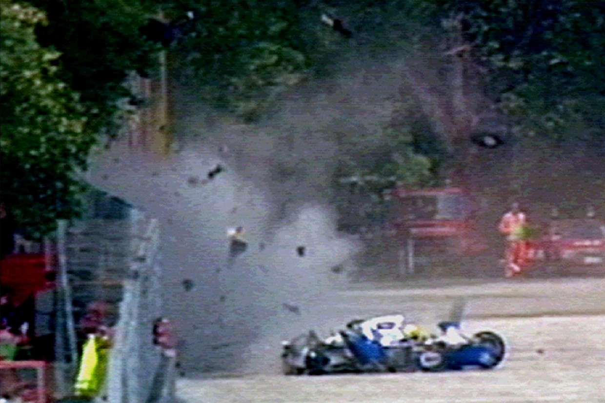

The previous day, Austrian driver Roland Ratzenberger had died when his car crashed during qualification for the race. His and Senna's crashes were the worst of several that took place that weekend (including a serious one involving Rubens Barrichello) and were the first fatal collisions to occur during a Formula 1 race meeting in 12 years and not repeated until the fatal crash of Jules Bianchi at the 2014 Japanese Grand Prix at Suzuka Circuit.
This became a turning point in the safety of Formula 1, prompting the implementation of new safety measures in both Formula 1 and the circuit, as well as the Grand Prix Drivers' Association to be reestablished.
The Supreme Court of Cassation of Italy ruled that mechanical failure was the cause of the crash.
| Formula 1 World Championship career | |
|---|---|
| First entry | 1984 Brazilian Grand Prix |
| First win | 1985 Portuguese Grand Prix |
| Last win | 1993 Australian Grand Prix |
| Last entry | 1994 San Marino Grand Prix |
| Website | ayrtonsenna.com.br |